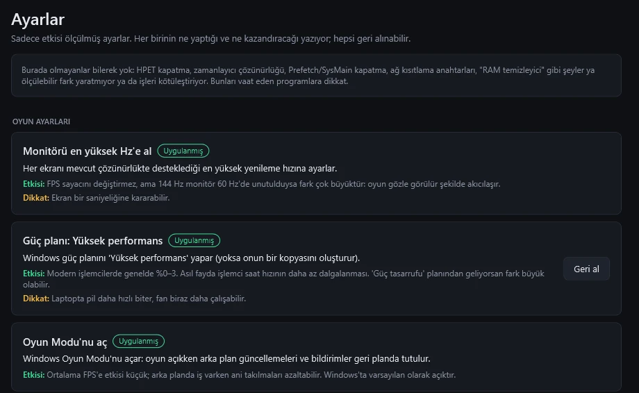
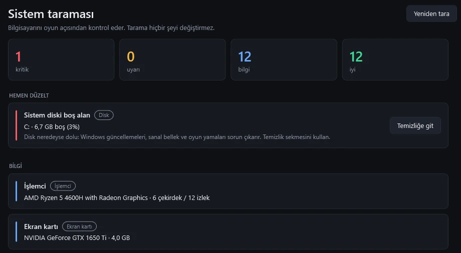
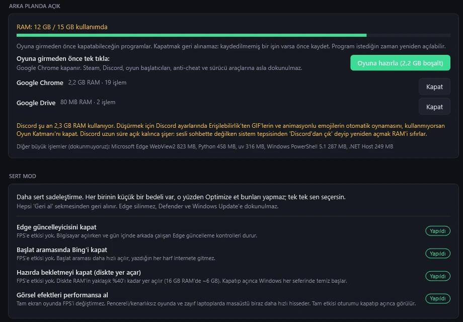
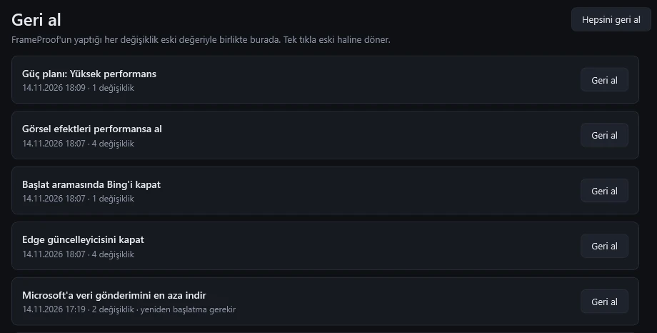

Genel bakış ve Optimize et
100 üzerinden puan ve tek tıkla optimizasyon. Önce ne yapacağını listeler, onay ister. Tartışmalı ya da yeniden başlatma isteyen ayarları kendiliğinden yapmaz.
Ücretsiz · Açık kaynak · Windows 10/11
FrameProof oyun bilgisayarındaki gerçek sorunları bulur, sadece etkisi ölçülmüş ayarları uygular ve sonucu FPS ölçümüyle sana gösterir. Placebo yok, sihirli düğme yok. Yaptığı her ayar tek tıkla geri alınır.
İlk açılışta mavi Windows bilgisayarınızı korudu
ekranı çıkabilir: Ek bilgi → Yine de çalıştır. Neden çıkıyor?

Sistemi okur, hiçbir şeyi değiştirmez. Sorunları önem sırasına koyar.
Sadece etkisi ölçülmüş ayarlar, senin onayınla. Eski değer hep kayıtlı.
Gereksiz dosyaları siler, oyunları silmeden sıkıştırıp yer açar.
Önce ve sonra FPS'i ölçer, farkı istatistikle söyler. Fark yoksa fark yok
der.
Özellikler
Her sekme tek bir iş yapar ve ne yaptığını açıkça yazar. Hiçbir şey sen onay vermeden değişmez.
100 üzerinden puan ve tek tıkla optimizasyon. Önce ne yapacağını listeler, onay ister. Tartışmalı ya da yeniden başlatma isteyen ayarları kendiliğinden yapmaz.
RAM XMP'siz mi çalışıyor, tek RAM mi takılı, monitör 60 Hz'de mi kalmış, güç planı tasarrufta mı, disk dolu mu, sürücü eski mi? BIOS'u yalnız okur, ne yapman gerektiğini adım adım anlatır.
Windows bazı oyunları işlemcinin içindeki zayıf karta atayabilir. Hangi oyunun hangi kartta çalıştığını gösterir, tek tıkla güçlü karta sabitler.
Steam ve Epic oyunlarını Windows'un kendi sıkıştırmasıyla küçültür. Hiçbir dosya silinmez, oyun her zamanki gibi açılır. Kazanç oyuna göre değişir, istersen geri alırsın.
Geçici dosyalar, güncelleme önbelleği, çökme dökümleri, sürücü kurulum artıkları, tarayıcı önbellekleri. Silmeden önce boyutunu gösterir, sen seçersin. Kişisel klasörlere dokunmaz.
Monitörü en yüksek Hz'e alma, Oyun Modu, Xbox arka plan kaydı, güç planı, Windows'un reklam ve arka plan özellikleri. Her birinin etkisi ve riski yanında yazıyor.
İsteğe bağlı, daha sert sadeleştirme: Edge güncelleyicisi, Copilot, Başlat'ta Bing, hazırda bekletme, görsel efektler. Her birinin bedeli yazıyor, tek tek sen seçersin.
RAM yiyen tarayıcı, OneDrive, Spotify, Teams gibi programları tek onayla kapatır, kaç GB açıldığını söyler. Steam, Discord, başlatıcılar ve anti-cheat'e asla dokunmaz.
Bilgisayar açılınca kendiliğinden başlayan programları aç ya da kapat. Görev Yöneticisi ile aynı yöntem, program silinmez.
Intel PresentMon ile oyunun gerçek kare sürelerini okur: ortalama FPS, 1% low, 0,1% low, takılma oranı, darboğaz GPU'da mı CPU'da mı, RAM yetti mi.
FrameProof'un yaptığı her değişiklik eski değeriyle birlikte burada. Tek tek ya da hepsini birden geri al.
Yeni sürüm çıkınca uygulama sana haber verir. Tıklarsın, kendini günceller. Sayfaya gelip yeniden indirmekle uğraşmazsın.
Neden diğerlerinden farklı
FPS artırıcıayar değiştirir ve hiçbir şey ölçmez.
İnternette dolaşan her tavsiyeyi uygulamaz. Etkisi ölçülebilir olanları yapar; her birinin ne yaptığını, beklenen etkisini ve riskini yazar.
Bir ayarı değiştirmeden önce eski değerini kaydeder. Geri al sekmesinden tek tek ya da hepsini birden eski haline döndürürsün.
Önce ve sonra ölçüm alır, gerçek 1% low değerlerini karşılaştırır. Fark gerçekse gerçek iyileşme
, değilse dürüstçe fark yok
der.
Bunlar internette çok önerilir ama ölçülebilir fayda sağlamaz ya da zarar verir.
bcdedit zamanlayıcı ayarlarıModern Windows'ta etkisiz ya da işleri kötüleştiriyor.Network throttlingve TCP ayarlarıOyun ping'ine etkisi yok.
fark yok.
Ne kadar FPS kazanacağını söyleyemeyiz, bilgisayarına bağlı. Zaten iyi ayarlı bir sistemde fark küçük olur; XMP kapalı, tek RAM ya da 60 Hz'de unutulmuş bir monitör varsa büyük olabilir. Rakamı kendi ölçümünle görürsün.
Ekranlar
Aşağıdakiler uygulamanın gerçek ekran görüntüleri. Büyütmek için görsele dokun.

Oyunları sıkıştır, Windows'un kendi dosya sıkıştırmasını kullanır. Dosyalar silinmez, oyun onları her zamanki gibi okur. Çoğu oyunda %10–40 yer açılır, zaten paketlenmiş oyunlarda daha az. exe/dll dosyalarına ve anti-cheat klasörlerine dokunulmaz.

Her ayarın altında ne işe yaradığı (Etkisi) ve neye mal olduğu (Dikkat) var. Uygulanmış olanın yanında Geri al düğmesi durur.

Tarama hiçbir şeyi değiştirmez. Sorunları önem sırasına koyar; düzeltilebilenlerin yanında düğme var, BIOS'ta yapılması gerekenleri adım adım anlatır.

Oyundan önce RAM yiyen programları tek onayla kapat. Sert mod'daki her maddenin bedeli açıkça yazıyor; Optimize et bunları kendiliğinden yapmaz.

Yapılan her değişiklik tarihiyle listede. Bir ayar hoşuna gitmediyse tek tıkla eski haline döner; hepsini birden de geri alabilirsin.
SSS
FrameProof sürücü yüklemez, oyunun belleğine ya da sürecine dokunmaz, anti-cheat'i kandırmaya çalışmaz. Vanguard, FACEIT ve EAC ile sorun çıkarmaz. Defender, Windows Update, Güvenlik Duvarı ve arama dizinine hiç dokunmaz. Temizlik kişisel klasörlerine girmez, kullanımdaki dosyaları atlar. Kaynak kodu açık, ne yaptığını herkes görebilir.
bilgisayarınızı korududiye uyarıyor? Virüs mü?
Hayır. Bu uyarı programın kod imzası olmadığı için çıkar; imza sertifikası her yıl para istiyor. Mavi ekranda Ek bilgi (bazı sürümlerde Daha fazla bilgi) yazısına, sonra Yine de çalıştır'a tıkla. İçinin rahat etmesini istersen kaynak kodu GitHub'da, kendin de derleyebilirsin.
Windows ayarlarının ve sistem klasörlerinin bir kısmı yalnız yönetici izniyle değiştirilebiliyor. Hayır dersen program yine açılır ama sınırlı modda çalışır: bazı temizlik maddeleri ve ayarlar kapalı olur, FPS ölçümü çalışmaz.
Sen onay vermeden hiçbir şeyi. Optimize et önce yapacaklarının listesini gösterir; yalnızca güvenli olanları yapar: seçili temizlik maddeleri, oyunları güçlü ekran kartına sabitleme, Oyun Modu, Xbox arka plan kaydı, monitör Hz'i ve Windows'un reklam ve arka plan özellikleri. Bellek Bütünlüğü, HAGS, telemetri servisi gibi tartışmalı ya da yeniden başlatma isteyen ayarları kendiliğinden yapmaz, programları da kapatmaz. Bitince neyi yaptığını ve kaç MB açıldığını gösterir.
Geri al sekmesini aç. FrameProof'un yaptığı her ayar orada eski değeriyle duruyor; tek tek ya da Hepsini geri al ile birden döndürürsün. Sıkıştırılmış oyunlar da buradan geri açılır (bunun için diskte kazanılan kadar boş yer lazım, yoksa FrameProof söyler ve başlamaz).
İki istisna var: temizlikte silinen gereksiz dosyalar geri gelmez (silmeden önce neyin ne kadar yer kapladığını görür, kendin seçersin),Oyuna hazırla ile kapatılan programlar da geri alınmaz, sadece yeniden açarsın. Kapatmadan önce açık işini kaydet.
Dürüst cevap: bilgisayarına bağlı. Zaten iyi ayarlı bir sistemde fark küçük olur. RAM XMP'siz çalışıyorsa, tek RAM takılıysa ya da 144 Hz monitör 60 Hz'de unutulmuşsa fark büyük olabilir. Rakam vaat etmiyoruz; FPS ölçümü sekmesiyle önce ve sonra ölçer, sonucu kendin görürsün. Fark yoksa FrameProof bunu da açıkça söyler.
Uygulama yeni sürüm olup olmadığını kendisi kontrol eder. Yeni sürüm varsa haber verir; tıklarsan kendini günceller. İstersen bu sayfadan en son sürümü her zaman yeniden indirebilirsin.
Tamamen ücretsiz ve açık kaynak (MIT lisansı). Hesap yok, reklam yok, telemetri yok. Ayarların ve ölçümlerin bilgisayarında %LOCALAPPDATA%\FrameProof klasöründe durur.
Sadece iki iş için: yeni sürüm olup olmadığını kontrol etmek ve FPS ölçümü için Intel PresentMon'u senin onayınla GitHub'dan indirmek (Intel imzası doğrulanır). Telemetri yok: ne kullanımın ne de bilgisayarın hakkında veri toplanır.
Evet, laptoplar için ayrıca bakıyor. İki ekran kartlı laptoplarda Windows bazı oyunları zayıf karta atayabiliyor; FrameProof bunu gösterir ve tek tıkla güçlü karta sabitler. FPS ölçümü sırasında oyunun gerçekten hangi kartta çalıştığını, ısıdan yavaşlama olup olmadığını ve laptopun pilde olup olmadığını da okur.
İndir, tara, ölç. Beğenmediğin her ayarı geri al.
FrameProof'u indir 66 MB · Windows 10/11Kurulum gerekmez. Uyarı çıkarsa: Ek bilgi → Yine de çalıştır.